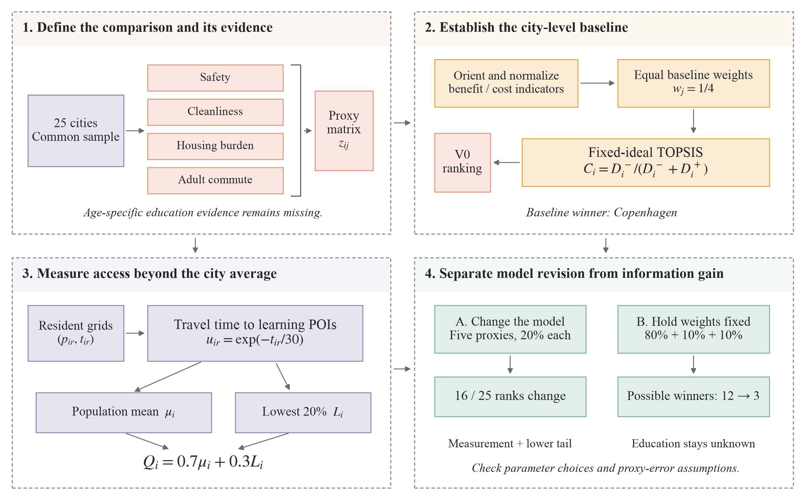
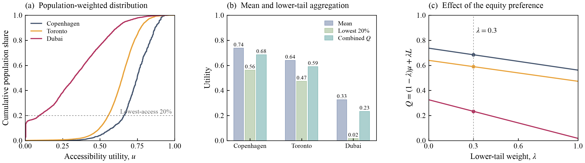
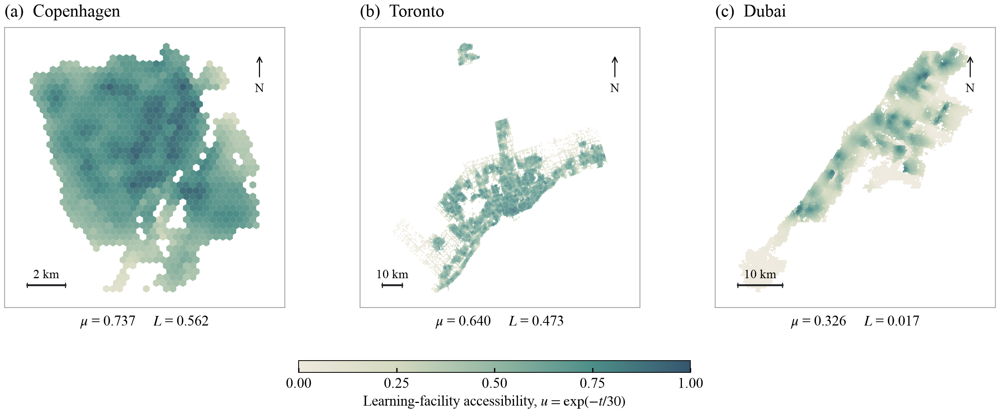
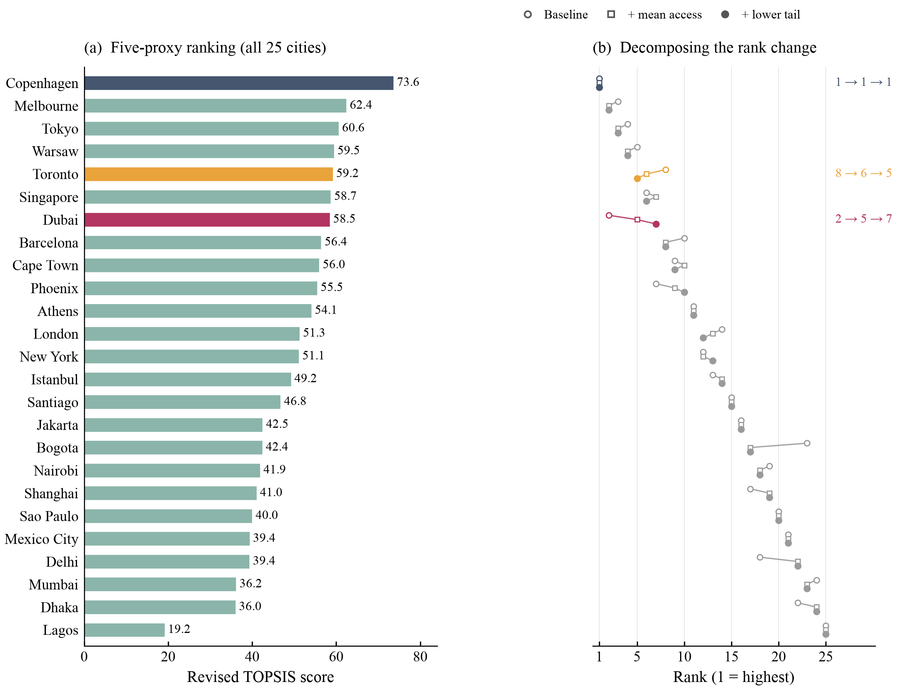
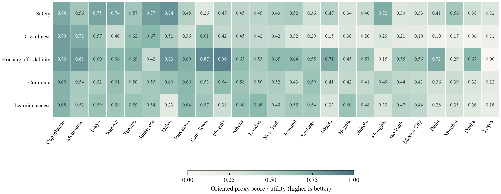

框架图 · 2024 · Team 14995 · PDF p.4
首选 · 四分区模型总览
 原论文摘录（点击查看原文）
原论文摘录（点击查看原文）
本题重绘（点击打开矢量PDF）值得学：四个虚线分区；每区一种功能色；内部大小框有层级，箭头只表达依赖。
这次怎么改：新版01保留四分区与分支结构，使用真正的研究步骤和公式。缩短标签、加大字号、减少无用节点。
本轮通过5张联系表浏览50个图页，放大检查关键原图，选出8份参考摘录。以下审美取舍是本次设计判断，不是获奖原因或质量评分。原文PDF页码与印刷页码可能不同。
六张新版图 PDF · 精选原图 PDF · 全部候选图页库 · 数据边界和使用说明
框架图 · 2024 · Team 14995 · PDF p.4
原论文摘录（点击查看原文）
本题重绘（点击打开矢量PDF）值得学：四个虚线分区；每区一种功能色；内部大小框有层级，箭头只表达依赖。
这次怎么改：新版01保留四分区与分支结构，使用真正的研究步骤和公式。缩短标签、加大字号、减少无用节点。
机制与敏感性 · 2023 · Team 13719 · PDF p.16
 原论文摘录（点击查看原文）
原论文摘录（点击查看原文）
本题重绘（点击打开矢量PDF）值得学：Times字形、细黑全边框、无背景网格；藏蓝／玫红／金黄明确区分三组。
这次怎么改：新版03沿用字体、轴框和三色关系。由于没有重复实验误差，不能仿画原图阴影带。
城市内部差异 · 2023 · Team 13719 · PDF p.15
 原论文摘录（点击查看原文）
原论文摘录（点击查看原文）
本题重绘（点击打开矢量PDF）值得学：统一面板边框和排列，空间细节本身构成视觉重点，尺度写清楚。
这次怎么改：新版02用三个真实城市的六边形网格，统一色标、独立比例尺；没有捏造底图或地标。
排名与对照 · 2023 · Team 13719 · PDF p.22
 原论文摘录（点击查看原文）
原论文摘录（点击查看原文）
本题重绘（点击打开矢量PDF）值得学：排序形成阅读顺序，颜色编码类别，图形紧凑，说明放在图下。
这次怎么改：新版04保留全部25城，条形后直接给分数，并列展示三阶段排名；去掉装饰性大标题。
均值／低尾／综合效用 · 2024 · Team 15504 · PDF p.18
值得学：每组重复同样的颜色次序；柱顶数值让读者不用猜。
这次怎么改：新版03b沿用组内顺序和直接标数，采用蓝灰、浅绿、青灰，去掉原图立体高光。
测量机制 · 2023 · Team 14632 · PDF p.8
值得学：输入、空间对象和演化过程连成关系；图形承担解释任务。
这次怎么改：新版01第三分区直接画居民网格、效用映射、均值与低尾的汇合；不复用蒲公英插图。
结果排名 · 2025 · Team 16739 · PDF p.9
值得学：横向标签易读，条尾给数值，轴刻度明确。
这次怎么改：新版04沿用横向条形和数值，但减少网格、将颜色留给三个机制案例。
参数影响 · 2023 · Team 14632 · PDF p.8
值得学：同一坐标结构重复三次；浅色带只标有数学含义的区间。
这次怎么改：新版03采用同高三面板。没有适用区间证据时不增加背景阴影。
Model construction and revision. The two experiments in Panel 4 answer different questions; the accessibility proxy does not measure high-school quality or admission eligibility.
Learning-facility accessibility in three illustrative cities. Each populated source grid is coloured by model utility. Blank space is outside retained populated grids, not necessarily water or missing facilities. Panel extents differ; local distance conversion and scale bars are approximate. Cases illustrate a stable leader (Copenhagen), upward revision (Toronto) and downward revision (Dubai), not a representative city sample.
Accessibility distributions and the lower-tail mechanism for three illustrative cities. Distributions are weighted by retained all-age population. Panel (c) varies only the normative lower-tail weight; the curves are not fitted empirical relationships. All plotted statistics were checked against the archived analysis.
Conditional ranking under the five-proxy model, with all 25 cities shown. Panel (b) separates the baseline, the addition of mean learning accessibility, and the lower-tail adjustment; vertical offsets separate the three markers for each city and carry no numerical meaning. Score changes across different models are not improvements in city conditions.

Information gain under fixed weights: baseline proxies 80%, learning accessibility 10%, unobserved education 10%. Intervals are feasible bounds, not confidence intervals. The three possible champions after observation are Copenhagen, Dubai and Melbourne. Additional proxy-error widths are stress assumptions, not estimated errors.

Five proxy indicators for all 25 cities, ordered by the revised ranking. Columns retain every city; the scale is bounded from zero to one. These are oriented proxy scores, not measurements of student outcomes.